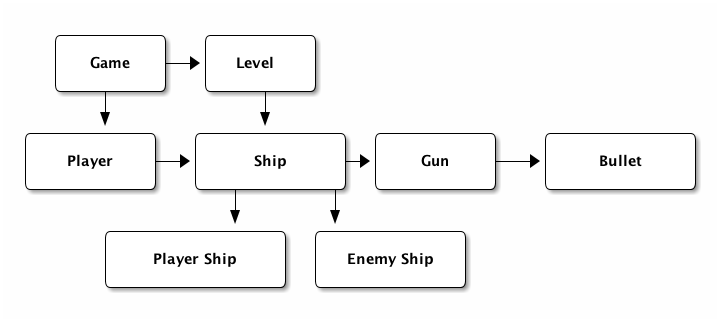
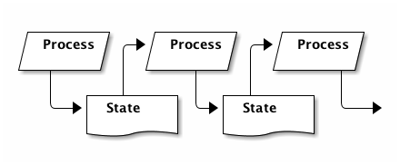

A small space shooter in Clojure.
Table of Contents
1 Introduction
So, at SUGSA this year, I was a a talk by @hermanlintvelt, titled "GRASPing OO Design". He was speaking about general OO design principles and I was amazed at the amount of stuff that I had, essentially, unlearnt almost the instant I picked up Clojure.
He presented the concept of assigning responsibilities to classes in OO and then proceeded to run through a fairly simple example of designing a basic game - described as (with me paraphrasing):
"A Game, where the Player controls a Ship in a Level. The Ship has Guns and a Gun can fire Bullets. There are Enemy Ships that also have Guns that fire Bullets. Bullets hit Ships and cause damage. Ships have health and if a Player Ship is destroyed, he loses the Game.
Furthermore, there is a Score Bar that keeps track of a Player Score, along with which Level the Player is currently on."
There was also mention of sharing your score via social channels, and perhaps a notion of lives, but for the purpose of this exercise I'm just going to ignore those details.
My thought while doing the exercise of designing which classes should exist and what their responsibilities should be was "What would this look like, should I build it in a Functional language, like Clojure?"
2 Act one - OO Design.
So let's pull it apart first in OO terms :

Here we see that a Game has Levels and a Player. The Level manages all kinds of ships, the Player also has a handle to a Ship and that any Ship can have Guns and Guns can own Bullets.
Ok, so maybe not the best design, but short of actually implementing this, it should do just fine.
3 Act two - Functional approach
The problem with the OO noun based approach, is that you are conflating your data with behaviour. Your data should exist as something you can store off and look at, as a snapshot at any point in time. Having mutable objects underneath your feet mean that your code gets kinda tricky to reason about.
What you really want is the classic approach to processing the universe:

You want to run your state through a function, take the result, thread it through the next function, rinse, repeat. That's a great way of thinking about things in the functional world.
So that got me to thinking about Component Entity Systems a little, and then the thought of just having everything as an entity. You basically end up with a list of hashmaps as your game state. Each hashmap simply represents some game entity - and they can refer to each other, a bit like foreign keys in a SQL database.
That gets a bit tricky in terms of querying your data - luckily, I have just the tool for the job. Enter Datomic.
In a nutshell, Datomic maintains an attribute schema, which lets you define arbitrary attributes that any entity might have and then a list of entities which you can assign these arbitrary attributes and values to.
Let's build some code in an attempt to clear this up
4 Setup the project
4.1 Create the project
The first thing we'll want to do is create a new project, so make sure you have Leiningen installed and fire this off in your terminal:
lein new space-shooter
This will create you a space-shooter folder, you'll need to cd into it for the rest of this article.
4.2 Setup Dependencies
Next up we open up the project.clj and setup the datomic and
datomic-schema dependencies. We'll throw Quil in so long, since we'll
want to visualize stuff later on.
(defproject space-shooter "0.1.0-SNAPSHOT" :description "A simple space shooter implementation" :url "http://github.com/CmdrDats/space-shooter" :license {:name "Eclipse Public License" :url "http://www.eclipse.org/legal/epl-v10.html"} :dependencies [[org.clojure/clojure "1.5.1"] [com.datomic/datomic-free "0.8.4254"] [datomic-schema "1.0.2"] [quil "1.6.0"]] :main space-shooter.core)
4.3 Fire up the REPL
Since we want to do REPL based development, let's get it running with:
lein repl
That should download the dependencies, give you an nrepl port (something like 58621) and a => REPL prompt. You can connect into this directly from your editor for your convenience, or just copy/paste the code snippets below into the REPL directly.
5 Setup the state handling
Now that we have that sorted, let's open up src/space_shooter/db.clj -
This is where we'll define our attributes and add any utility
functions we might want to use against our datomic db.
First off, let's import the datomic-schema utility functions and the datomic api:
(ns space-shooter.db (:use [datomic-schema.schema :only [defpart defschema fields]]) (:require [datomic.api :as d]) (:require [datomic-schema.schema :as s]))
Then we want to setup a db-url, we'll just use the in memory db for now. Additionally, we'll add a couple of helper functions that just make it a bit quicker to do a few common things with the db.
5.1 DB Helper functions
Now to setup datomic and some helper functions around that
(defonce db-url "datomic:mem://testdb")
db just gives us the current value of the database at the latest
known point in time.
(defn db [] (d/db (d/connect db-url)))
tx will take a list of transactions and send them off to the
transactor for storing into the db
(defn tx [t] (d/transact (d/connect db-url) t))
e is just a helper function we can use at the repl over a list of
entity results to quickly visualise our entities
(def e (comp d/touch #(d/entity (db) %) first))
One last thing we'll need is an addition transactor function so that we don't end up overwriting accounting style values (like health, for instance.) - This is taken straight from the Day of Datomic sample code.
(def tx-functions [{:db/id #db/id [:db.part/user] :db/ident :inc :db/doc "Data function that increments value of attribute a by amount." :db/fn #db/fn {:lang "clojure" :params [db e a amount] :code [[:db/add e a (-> (d/entity db e) a (+ amount))]]}}])
5.2 Schema
Right, now we're ready to define the attributes for our game. The
first thing we want is a couple of global attributes we'll use on
everything, namely uuid and type, we'll namespace those under
:entity
We'll be using datomic-schema to define the schema of our db, since it's nice and concise.
(defschema entity (fields [uuid :uuid] [type :keyword "The type of game entity"]))
Next up, we'll want to define some properties for all 'real' physical objects in the game, like position, velocity, size. We'll assume very simple rectangular bounding boxes for the collisions in this game. Also, let's throw in the concept that another entity will 'own' this thing.
I think a good name for this will be thing, so that we don't confuse
it with an overloaded concept of object
We can assert that all things have health, and if they get to zero,
it will be destroyed. In the case of bullets, we'll overload that as
an amount of damage, for convenience.
(defschema thing (fields [owner :ref] [posx :double] [posy :double] [velx :double] [vely :double] [width :double] [height :double] [health :long]))
This should be able to represent pretty much every thing in the
game. Now for some meta objects
We'll need some specific information about a player, like the name and score:
(defschema player (fields [name :string] [score :long]))
The level is really just a configuration that we'll use to setup the game to a certain state and spawn all the things in the game, so we have no need for tracking that in our game state.
Similarly, the guns are just a configuration of the ship type, so there's no reason to track that as state either. Bullets are just small objects with velocity and 'health' with a bullet type.
The last part here is to create a helper function that will setup our db, install our tx function and get the schema in
(defn setup-db [& args] (d/create-database db-url) (tx (concat tx-functions (s/build-schema d/tempid))))
5.3 Spawn functions
new-ent just sets up a transaction for a new entity by assigning it
a temporary id, a sequential UUID (better for indexing) and reminds
us to pick a type for our new entity in the game.
(defn new-ent [type e] (assoc e :db/id (d/tempid :db.part/user) :entity/uuid (d/squuid) :entity/type type))
To make it a little easier to spawn thing's in the game, let's define
a spawning function:
(defn spawn [type health owner [posx posy] [width height] [velx vely]] (let [e {:thing/posx posx :thing/posy posy :thing/velx velx :thing/vely vely :thing/width width :thing/height height :thing/health health} e (if owner (assoc e :thing/owner owner) e)] (new-ent type e)))
5.4 Try it out
Now we've defined a bunch of stuff, lets see what playing with the
game state actually does. Make sure you've evaluated all of the above
code in the REPL and you're currently in the space-shooter.db
namespace (just type (ns space-shooter.db) if you're not)
NOTE: the part after the => is what you enter in each of the following examples, the bit after that will be a sample of the response you receive.
Let's define me as a player:
=> (new-ent {:player/name "Deon" :player/score 0} :player) {:entity/type :player, :entity/uuid #uuid "527740ce-962f-49dd-9978-36e385980f4c", :db/id #db/id[:db.part/user -1000000], :player/score 0, :player/name "Deon"}
That's neat, but it hasn't done anything in the db yet - we're happy with it though, so let's store it off:
=> (tx [*1]) ExceptionInfo :db.error/db-not-found Could not find testdb in catalog datomic.error/raise (error.clj:46)
Whoops. We were a little too eager.. we actually need to create the database and setup the schema first!
=> (setup-db) #<promise$settable_future$reify__4424@5220c1b: {:db-before datomic.db.Db@4f97ab72, :db-after datomic.db.Db@df8e05ff, :tx-data [...], :tempids {...}}
Nice - notice how we have received an object back where we can get the value of the db before and the value after our transaction. That's universal for every transaction, including setting up the schema or just writing any arbitrary data. We also get a temporary id to actual id map back, which we could use to update our knowledge of the entities we've just committed into the db.
For now, we ignore this result and try creating a new player again1:
=> (new-ent {:player/name "Deon" :player/score 0} :player) {:entity/type :player, :entity/uuid #uuid "527740ce-962f-49dd-9978-36e385980f4c", :db/id #db/id[:db.part/user -1000000], :player/score 0, :player/name "Deon"} => (def p *1) #'space-shooter.db/p => (tx [p]) #<promise$settable_future$reify__4424@3f901572: {:db-before datomic.db.Db@df8e05ff, :db-after datomic.db.Db@ee7763e0, :tx-data [...], :tempids {...}}>
Now we can query for the player to make sure it's there:
=> (d/q '[:find ?e :where [?e :entity/type :player]] (db)) #{[17592186045418]} => (e (first *1)) {:entity/type :player, :entity/uuid #uuid "527740ce-962f-49dd-9978-36e385980f4c", :player/score 0, :player/name "Deon", :db/id 17592186045418}
And there it is. We should be able store any arbitrary entity we should need in the game.
6 Game loop
6.1 Setup
Well now we get to the crunch - what does the game loop look like?
First we setup our namespace in src/space_shooter/loop.clj
(ns space-shooter.loop (:require [datomic.api :as d] [space-shooter.db :as db]))
We're going to write a few functions that will adhere to the signature
of (defn actions [elapsedms db]) which will simply query the current db and
return a list of transactions that it should apply for this step. For
example, a function that would spawn a new bullet at every step (very fast.) :
(defn spawn-bullet [elapsed db] [(spawn :bullet 10 nil [100.0 100.0] [5.0 5.0] [0.0 -5.0])])
If we wanted to make it shoot only a bullet every second, we could keep a timeout value as an entity in the db, but we're going to ignore that in favour of a simple example.
6.2 Movement
Let's write a bit of code that will look for all the entities and move them along according to their velocity and elapsed time.
(defn add-velocity [elapsed thing] [[:inc (:db/id thing) :thing/posx (* elapsed (:thing/velx thing))] [:inc (:db/id thing) :thing/posy (* elapsed (:thing/vely thing))]]) (defn movements [elapsed db] (->> (d/q '[:find ?e :where [?e :thing/posx]] db) (mapcat (comp (partial add-velocity elapsed) (partial d/entity db) first))))
So movements will look for all entities with an attribute
of :thing/posx that exists and put together tx functions for adding
all the movements to them. We're using the threading macro here to
take the results of d/q and pass it as the last argument of mapcat
Let's check that this actually works? First, we create a ship :
=> (db/tx [(db/spawn :ship 10 nil [100.0 100.0] [10.0 10.0] [1.0 2.0])]) #<promise$settable_future$reify__4424@3cde8a82: {:db-before datomic.db.Db@eebfe950, :db-after datomic.db.Db@c77c1b7f, :tx-data [...], :tempids {...}}>
Great, our ship has been spawned - now let's see how we'd move it:
=> (movements 100 (db/db)) ([:inc 17592186045422 :thing/posx 100.0] [:inc 17592186045422 :thing/posy 200.0]) => (db/tx *1) #<promise$settable_future$reify__4424@4d036908: {:db-before datomic.db.Db@8f7ff0d8, :db-after datomic.db.Db@8ee561ed, :tx-data [...], :tempids {}}
That looks good, let's have a look at our ship and see if the position has changed accordingly:
=> (map db/e (d/q '[:find ?e :where [?e :entity/type :ship]] (db/db))) ({:entity/type :ship, :entity/uuid #uuid "5278077d-3497-4fdb-94fe-a032633d15f1", :thing/posx 200.0, :thing/posy 300.0, :thing/height 10.0, :thing/vely 2.0, :thing/width 10.0, :thing/velx 1.0, :thing/health 10, :db/id 17592186045422})
Beautiful. That worked nicely.
6.3 Collision handling
Let's keep this clean and assume that anything that gets hit by something else loses as much health as the the thing that hit it.
We'll start with creating some things in our db that actually collide and build the query that finds them:
=> (db/tx [(db/spawn :ship 10 nil [200.0 200.0] [10.0 10.0] [1.0 2.0]) (db/spawn :ship 6 nil [205.0 205.0] [10.0 10.0] [1.0 2.0])]) #<promise$settable_future$reify__4424@45d017d4:....
Two ships are going to collide! We expect one to come out with a health of 4 and the other a health of -4. We'll take care of actually removing an entity in a seperate cleanup function.
So, how do we find them? We can start with a collides function that takes an entity's position and size and another position and size and compare them for collision (single axis collision)
(defn collides [ep es op os] (or (and (> (+ ep es) op) (< ep (+ op os))) (and (> (+ op os) ep) (< op (+ ep es)))))
Then we can run this query to find them:
=> (d/q '[:find ?e ?o :where [?e :thing/posx ?epx] [?e :thing/width ?ew] [?o :thing/posx ?opx] [?o :thing/width ?ow] [(space-shooter.loop/collides ?epx ?ew ?opx ?ow)] [?e :thing/posy ?epy] [?e :thing/height ?eh] [?o :thing/posy ?opy] [?o :thing/height ?oh] [(space-shooter.loop/collides ?epy ?eh ?opy ?oh)] [(!= ?e ?o)]] (db/db)) #{[17592186045419 17592186045420] [17592186045420 17592186045419]}
This shows us that ..419 collides with ..420 and ..420 collides with ..419. Excellent. Let's make sure another ship won't also collide if outside the bounds :
=> (db/tx [(db/spawn :ship 100 nil [100.0 100.0] [10.0 10.0] [1.0 2.0])]) #<promise$settable_future$reify__4424@6596f6ef:...
And if we run the query again, we see it hasn't affected our result. Hurrah! But is there a slightly more succinct way of expressing this query?
(defn collides [db e o pos size] (let [ent (d/entity db e) oth (d/entity db o) ep (pos ent) es (size ent) op (pos oth) os (size oth)] (or (and (> (+ ep es) op) (< ep (+ op os))) (and (> (+ op os) ep) (< op (+ ep es))))))
Then we can express our query like so:
=> (d/q '[:find ?e ?o :where [?e :thing/posx] [?o :thing/posx] [(space-shooter.loop/collides $ ?e ?o :thing/posx :thing/width)] [(space-shooter.loop/collides $ ?e ?o :thing/posy :thing/height)] [(!= ?e ?o)]] (db/db)) #{[17592186045419 17592186045420] [17592186045420 17592186045419]}
Same results and slightly more succinct query, but I'd venture to guess that it would be a bit slower. Don't quote me on it though.
Anyhow - we'll go for the latter approach, since we can always optimize later.
(defn collision-damage [[thing other]] [[:inc (:db/id thing) :thing/health (- (:thing/health other))]]) (defn collisions [elapsed db] (->> (d/q '[:find ?e ?o :where [?e :thing/posx] [?o :thing/posx] [(space-shooter.loop/collides $ ?e ?o :thing/posx :thing/width)] [(space-shooter.loop/collides $ ?e ?o :thing/posy :thing/height)] [(!= ?e ?o)]] db) (mapcat (comp collision-damage (fn [t] (map (partial d/entity db) t))))))
And if we run this :
=> (collisions 0 (db/db)) ([:inc 17592186045419 :thing/health -6] [:inc 17592186045420 :thing/health -10]) => (db/tx *1) #<promise$settable_future$reify__4424@23f23303:... => (map (comp (juxt :db/id :thing/posx :thing/health) db/e) (d/q '[:find ?e :where [?e :entity/type :ship]] (db/db))) ([17592186045420 205.0 -4] [17592186045419 200.0 4] [17592186045422 100.0 100])
Looks great, so we commit the transaction and check the ship healths and see that they have indeed been correctly changed.
6.4 Remove entities that have zero or lower health
Now, of course, we have these pesky zero health ships running amok, ruining our day. We best be getting rid of them.
=> (d/q '[:find ?e :where [?e :thing/health ?h] [(<= ?h 0)]] (db/db)) #{[17592186045420]}
Running a query to find all things that have negative health shows that …420 indeed has zero or less health, so we should be able to remove that entity and be done.
As an aside, we also want to remove anything outside our 'playing field', so lets make this an arbitrary size and get rid of those entities too.
(defn remove-chaff [elapsed db] (->> (concat (d/q '[:find ?e :where [?e :thing/health ?h] [(<= ?h 0)]] db) (d/q '[:find ?e :where [?e :thing/posx ?x] [(<= ?x -100)]] db) (d/q '[:find ?e :where [?e :thing/posy ?y] [(<= ?y -100)]] db) (d/q '[:find ?e :where [?e :thing/posx ?x] [(>= ?x 1000)]] db) (d/q '[:find ?e :where [?e :thing/posy ?y] [(>= ?y 1000)]] db)) (map (fn [i] [:db.fn/retractEntity (first i)]))))
Note: This would essentially remove everything known about the entity, which would make it instantly vanish. In a real game, you probably want to set some kind of 'busy blowing up' state so that you can animate that before actually getting removed - either that or just spawn an effect in the ship's place. But this article is long enough without introducing effects!
Give that a test run:
=> (remove-chaff 0 (db/db)) ([:db.fn/retractEntity 17592186045420]) => (db/tx *1) #<promise$settable_future$reify__4424@7a2fc0ff:... => (def t *1) #'space-shooter.loop/t
Here you'll see I stored off the result of the transaction into t, I
want to quickly show that the latest db value doesn't have the entity
anymore:
=> (remove-chaff 0 (db/db)) ()
But, if I run remove-chaff against the old value….
=> (remove-chaff 0 (:db-before @t)) ([:db.fn/retractEntity 17592186045420])
Neato. So if remove-chaff didn't work as expected, at least I just step back into a previous state, run it until it does work correctly.
6.5 Finally, putting it all together
Finally, we'll want a game-loop function that will take the current state
and produces a list of transactions to update the game state to the
next 'generation'.
(defn game-loop [elapsed db] (reduce (fn [[db tx] f] (let [txes (f elapsed db)] [(:db-after (d/with db txes)) (concat tx txes)])) [db []] [remove-chaff movements collisions]))
Testing this function out should give you something like:
=> (game-loop 5 (db/db)) [datomic.db.Db@78eee823 ([:inc 17592186045419 :thing/posx 5.0] [:inc 17592186045419 :thing/posy 10.0] [:inc 17592186045422 :thing/posx 5.0] [:inc 17592186045422 :thing/posy 10.0])]
The game loop function only aggregates the changes that needs to be made and returns that list of transactions along with a db value 'as if' they have all been applied. Now all we need to do to make it step is commit those transactions:
=> (db/tx (second *1)) #<promise$settable_future$reify__4424@2035938e:...
And you should see some positions being updated. Now you can imagine that part is just a case of a simple spinning loop - we can control the speed of how fast that should cycle.
7 Visuals
Alright, I want to get something visual on the screen at this point. Raw data is great and all, but doesn't beat seeing something tangible happening!
So, let's open up a new file for this at
src/space_shooter/ui.clj and set it up like:
(ns space-shooter.ui (:use [quil.core]) (:require [datomic.api :as d]) (:require [space-shooter.db :as db]))
Ok, Quil needs a setup function so that it can prepare your canvas:
(defn setup [] (smooth) (frame-rate 10) (background 200))
Then we're going to use a multi-method to dispatch the kind of thing we're wanting to draw, so defining that would look like:
(defmulti render-thing :entity/type)
And then a :ship and :default implementation. You probably want to make the :default implementation somewhat obvious, but a small 5x5 circle will do.
(defmethod render-thing :ship [e] (ellipse (:thing/posx e) (:thing/posy e) (:thing/width e) (:thing/height e))) (defmethod render-thing :default [e] (ellipse (:thing/posx e) (:thing/posy e) (:thing/width e) (:thing/height e)))
Circles aren't particularly exciting, but at least I don't have to worry about heading at this point. I'll leave that as an exercise for you, dear reader.
Another thing we'd like is a little line to show velocity, so we can see where the ship is headed.
(defn render-velocity [{x :thing/posx y :thing/posy vx :thing/velx vy :thing/vely}] (line x y (+ x (* vx 10)) (+ y (* vy 10))))
Last thing Quil would like is a draw function that it will call as rapidly as it needs to fulfill the frame-rate you specified in the setup function.
(defn draw [] (let [db (db/db)] (background 200) (doseq [es (d/q '[:find ?e :where [?e :thing/posx]] db) :let [ent (d/entity db (first es))]] (render-thing ent) (render-velocity ent))))
Notice that in the beginning of this function, we're getting the current database value - that affords us the knowledge that the state we're currently trying to render is stable, and won't change under our feet.
We then just query for any entry in the database that has a
:thing/posx attribute assigned, push them through the d/entity
function so that we can get at the other attributes and render them.
Lastly, we fire up the sketch!
(defn start-sketch [] (sketch :title "Simple Space Shooter" :setup #'setup :draw #'draw :size [800 600]))
Then call (start-sketch) in the REPL.
If you still have the db state from earlier, you should see two neat circles in it's own window. Let's switch over to our space-shooter.loop and move them!
=> (ns space-shooter.loop) nil => (db/tx (second (game-loop 1 (db/db)))) #<promise$settable_future$reify__4424@775dfb9d:...
Nice - did you see them move a pixel or two? Of course, their velocity is ridiculous if this represented a single millisecond.. anyhow. Maybe try animating them a little
=> (doseq [_ (range 50)] (db/tx (second (game-loop 0.3 (db/db)))) (Thread/sleep 50)) nil
You should see your little ships meandering off into the distance. Cool. Notice that the game loop is running off a completely different thread to the UI - because the state is effectively immutable this is completely safe without any notion of locking involved.
One last thing I want to add before we tie everything together is some form of input, so let's make ships run to the mouse, left click fires off bullets toward the mouse and right click spawn a new ship at the cursor.
Weird game, but whatever, let's build some mouse listeners. Starting with the mouse movement:
(defn vel-towards [x y {px :thing/posx py :thing/posy e :db/id}] (let [vx (- x px) vy (- y py) m (mag vx vy)] [[:db/add e :thing/velx (double (norm vx 0 m))] [:db/add e :thing/vely (double (norm vy 0 m))]])) (defn mouse-moved [] (let [db (db/db) [x y] [(mouse-x) (mouse-y)]] (->> (d/q '[:find ?e :where [?e :entity/type :ship]] db) (mapcat (comp (partial vel-towards x y) (partial d/entity db) first)) (db/tx))))
vel-towards just takes the mouse x and y, deconstructs the thing
and applies a normalized vector towards the mouse.
mouse-moved will find all the relevant entities (ships) and pushes them
through vel-towards, then transacts the new velocities.
(defn shoot-bullet [[x y] {px :thing/posx py :thing/posy e :db/id}] (let [vx (- x px) vy (- y py) m (mag vx vy) vx (* 5 (norm vx 0 m)) vy (* 5 (norm vy 0 m))] [(db/spawn :bullet 2 nil [(+ px (* 4 vx)) (+ py (* 4 vy))] [2.0 2.0] [vx vy])])) (defn mouse-click [] (let [db (db/db) pos [(double (mouse-x)) (double (mouse-y))]] (case (mouse-button) :left (->> (d/q '[:find ?e :where [?e :entity/type :ship]] db) (mapcat (comp (partial shoot-bullet pos) (partial d/entity db) first)) (db/tx)) :right (db/tx [(db/spawn :ship 2 nil pos [10.0 10.0] [0.0 0.0])]) nil)))
Probably some of the bulkiest code in the game.. This just figures out where to spawn the bullets and what velocity to give it so that it shoots toward the mouse cursor.
And, finally - the updated sketch with the click and move functions registered.
(defn start-sketch [] (sketch :title "Simple Space Shooter" :setup #'setup :draw #'draw :size [800 600] :mouse-moved #'mouse-moved :mouse-clicked #'mouse-click))
If you're curious, like me, about seeing this actually move around - throw this into your REPL:
=> (start-sketch) ... => (doseq [_ (range 10000)] (db/tx (second (game-loop 1 (db/db)))) (Thread/sleep 10))
You'll need to C-c C-c to stop it from running.
And.. now that you're back from trying to spawn little round circle
and shoot them down with other round circles, let's tie this up into
something we can lein run.
8 Bootstrap into the game
As usual, we begin by creating a new file at
src/space_shooter/core.clj and setting up the namespace.
(ns space-shooter.core (:require [space-shooter.db :as db]) (:require [space-shooter.loop :as loop]) (:require [space-shooter.ui :as ui]) (:gen-class))
We want a clean way of pausing the game, so lets create a quick set of functions for that:
(def paused (atom false)) (defn pause [] (reset! paused true)) (defn unpause [] (reset! paused false))
Then we'll just setup the loop like we did earlier, using a nicer recur though.
(defn run-game [] (if-not @paused (do (db/tx (second (loop/game-loop 0.5 (db/db)))) (Thread/sleep 10)) (do (Thread/sleep 500))) (recur))
And finally, the entry point of the whole thing
(defn -main [& args] (db/setup-db) (ui/start-sketch) (doto (Thread. run-game) (.setDaemon true) (.start)))
Quit the REPL at the command line by typing quit and then fire the
whole thing up again using:
lein run
Now you can blow up little spaceships to your hearts content.
9 Conclusions
This article ran over a fairly trivial implementation - you'd have noticed that the performance isn't stellar, but the focus is more on the design than the performance.
There's also a couple of features I didn't get around to implementing, like level loading, entity ownership and score handling. But I think I showed enough of the game to illustrate the general design.
I quite enjoyed the idea of using the bits of Datomic for this, I'm curious about the feasibility in the longer term. Possibly pulling out the parts of Datomic that would make sense from a game dev point of view. I also like the fact that you get a full replay of your game, almost free.
One last thing to note is that I'm not entirely fond of the way Quil is built, since it makes no attempt at even veneering statefulness, but I use it since it's a very handy, quick and dirty visualization library.
I hope you enjoyed this process, please drop me feedback on Twitter (@CmdrDats) or Github (CmdrDats) - I do appreciate it!
10 org-mode
And the obligatory bit on org-mode. This was a bit of an exercise in
literate programming. Pretty cool - you can download this raw game.org
file and run it through org-bable-tangle in emacs to get the source
extracted into the correct places for you.
You could just checkout the git repo as well though… anyhow! It did help keep the article and the actual code inline so that I didn't make a change in my codebase and forget to add it to the doc!
Footnotes:
1 PS. *1, *2 and *3 refer to the last, second last last and third
to last results in the REPL. There is not *4 and upward. These are
handy for REPL dev, but sometimes it's a bit too easy to lose your
results, so I recommend using (def) as above to hold onto your objects
when you might need them later on. Careful not to conflict with
existing vars though!